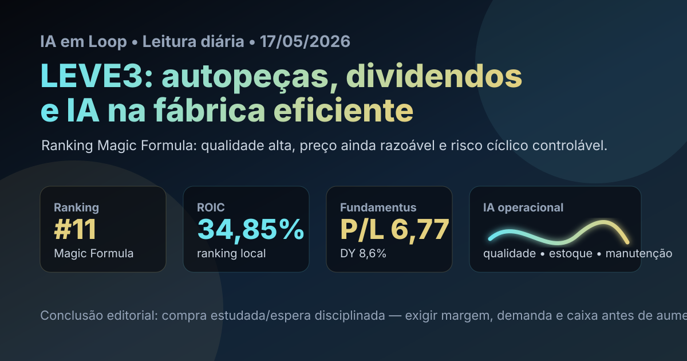

17/05: LEVE3, autopeças e IA na fábrica eficiente
Domingo pede uma leitura menos barulhenta e mais disciplinada. LEVE3 é uma empresa de autopeças com retorno sobre capital alto, múltiplos ainda razoáveis e uma tese que depende menos de “história bonita” e mais de execução industrial.

Leitura visual: LEVE3 combina ROIC elevado, dividendos relevantes e exposição ao ciclo automotivo; IA só entra na tese se melhorar qualidade, estoque, manutenção e eficiência de fábrica.
O sinal do dia
A leitura de hoje avança para LEVE3, nome bem posicionado no ranking Magic Formula. O foco econômico está em uma tese diferente: qualidade industrial, dividendos e execução no ciclo de autopeças.
O noticiário recente dá motivo para olhar a empresa sem inventar novidade. Via Google News RSS, apareceram manchetes informando que a Mahle Metal Leve lucrou R$ 214,2 milhões no 1T26, alta de cerca de 35%, além de notícias sobre remuneração/dividendos aprovada em assembleia e cautela de casas sobre autopeças. Do lado setorial, a Anfavea projetou crescimento de 3,7% na produção de veículos em 2026, enquanto notícias de maio apontaram avanço da produção em abril. É um pano de fundo construtivo, mas ainda cíclico.
Leitura IA em Loop: LEVE3 não é “compra porque paga dividendo”. É estudo de qualidade industrial: retorno alto sobre capital, valuation menos esticado que outras empresas excelentes e dependência direta de demanda automotiva, mix, câmbio, matéria-prima e disciplina de capital.
Por que LEVE3 hoje?
No ranking Magic Formula de maio do IA em Loop, LEVE3 aparece em 11º lugar, com ROIC de 34,85%, earnings yield de 15,77% e score final 39. Em consulta ao Fundamentus feita hoje, a ação aparecia a R$ 33,18, com P/L de 6,77, P/VP de 4,20, dividend yield de 8,6%, ROE de 62,0% e ROIC de 33,2%.
Essa é uma fotografia bem diferente de turnaround. Em QUAL3, o desafio era provar recuperação. Em LEVE3, o desafio é não pagar caro demais por uma empresa que já entrega rentabilidade alta. O P/VP elevado mostra que o mercado reconhece qualidade; o P/L baixo e o dividend yield relevante mostram que ainda pode haver remuneração interessante se lucro e caixa forem sustentáveis.
| Item | Leitura verificada | Implicação |
|---|---|---|
| Ranking | 11º na Magic Formula de maio | Entra na fila após evitar repetição dos últimos tickers |
| ROIC | 34,85% no ranking; 33,2% no Fundamentus | Eficiência de capital alta e consistente na fotografia atual |
| Valuation | P/L 6,77 e P/VP 4,20 no Fundamentus | Lucro barato, patrimônio já valorizado pelo mercado |
| Dividendos | DY 8,6% no Fundamentus; assembleia recente aprovou remuneração | Renda relevante, mas dependente do ciclo e do caixa |
| Setor | Anfavea projetou +3,7% em produção de veículos em 2026 | Ambiente positivo, porém exposto a juros, crédito e importados |
Tese, pontos positivos e riscos
Tese
LEVE3 é uma tese de empresa industrial eficiente: se a produção de veículos continuar crescendo, o mix se mantiver favorável e a companhia proteger margem, o acionista pode combinar lucro, dividendos e retorno sobre capital acima da média.
Pontos positivos
ROIC alto, ROE elevado, P/L baixo na fotografia atual, dividend yield relevante e notícia recente de lucro maior no 1T26. O ranking confirma que não é apenas “ação de dividendo”; é retorno sobre capital com preço ainda observável.
Riscos
Autopeças é cíclico. Juros altos podem esfriar venda de veículos; câmbio e insumos pressionam margem; importação de peças e veículos pode afetar competição; payout alto demais pode reduzir folga para investimento.
Contexto macro
Com Selic elevada, a régua para comprar ações segue dura. LEVE3 precisa entregar retorno total superior ao CDI, não apenas um dividendo bonito olhando pelo retrovisor.
Onde a IA entra na história
Em uma fabricante de autopeças, IA não precisa aparecer como produto de vitrine. Ela pode gerar valor nas rotinas invisíveis: inspeção visual de qualidade, manutenção preditiva, previsão de demanda por montadora e reposição, otimização de estoques, roteirização logística, compras de insumos e redução de refugo.
Esse é o tipo de IA que combina com uma empresa de alto ROIC: tecnologia que reduz falha, capital parado e desperdício. O investidor deve procurar sinais práticos nos releases: margem bruta, giro de estoque, despesas industriais, entregas no prazo e estabilidade de caixa. Se a IA não aparece nesses indicadores, é narrativa; se aparece, vira vantagem operacional.
Compra, venda ou espera?
Pelos critérios do IA em Loop, LEVE3 entra hoje como compra estudada com espera disciplinada. A qualidade dos números justifica radar mais próximo que em uma tese de turnaround, mas o preço não pode ser analisado só pelo P/L. O P/VP alto, o ciclo automotivo e a exigência de bater CDI pedem entrada com margem de segurança, não entusiasmo de domingo.
- Gatilho de compra: confirmar no release do 1T26 que lucro, margem, caixa e dividendos vieram de operação recorrente, sem consumo exagerado de capital de giro.
- Gatilho de espera: ação subir forte sem revisão de lucro, múltiplos se comprimirem menos do que parece ou sinais de pressão de custos/importados aparecerem.
- Gatilho de venda/redução: queda de margem, piora de demanda das montadoras, payout incompatível com investimento, aumento de dívida ou dependência excessiva de resultado não recorrente.
O que isso muda na carteira
LEVE3 ajuda a diversificar a sequência do blog porque sai de seguros, petróleo, construção e saúde para uma indústria real, intensiva em execução. Mas não deve virar concentração automática: autopeças sofre com ciclo, crédito, câmbio e competição global. Em uma carteira skin in the game, a posição faria mais sentido como parte de um bloco de qualidade/preço, não como aposta única em dividendos.
A pergunta prática é: “a empresa consegue manter ROIC acima de 30% enquanto remunera acionistas e atravessa um ciclo de juros altos?”. Se a resposta vier dos números trimestrais, LEVE3 merece espaço no radar. Se vier só de manchete de dividendos, ainda é pouco.
Checklist antes de agir
- Ler release, ITR e apresentação do 1T26, separando lucro recorrente, margem, caixa operacional e capital de giro.
- Comparar LEVE3 com POMO3 e outros nomes industriais do ranking para não pagar caro por uma tese já consensual.
- Acompanhar produção de veículos, crédito para automóveis, importações, câmbio e preço de insumos.
- Verificar política de dividendos e se a remuneração não compromete investimento, tecnologia e competitividade.
- Usar R$ 33,18 apenas como fotografia de consulta; preço de execução deve ser validado no home broker/B3.